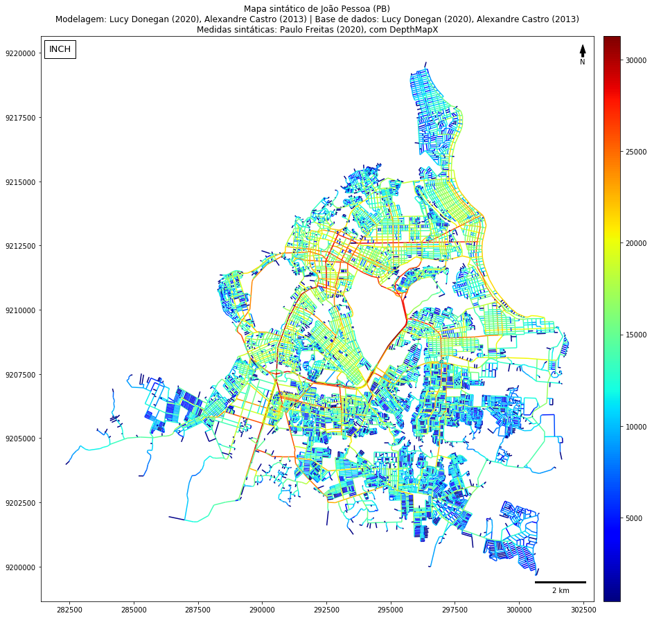
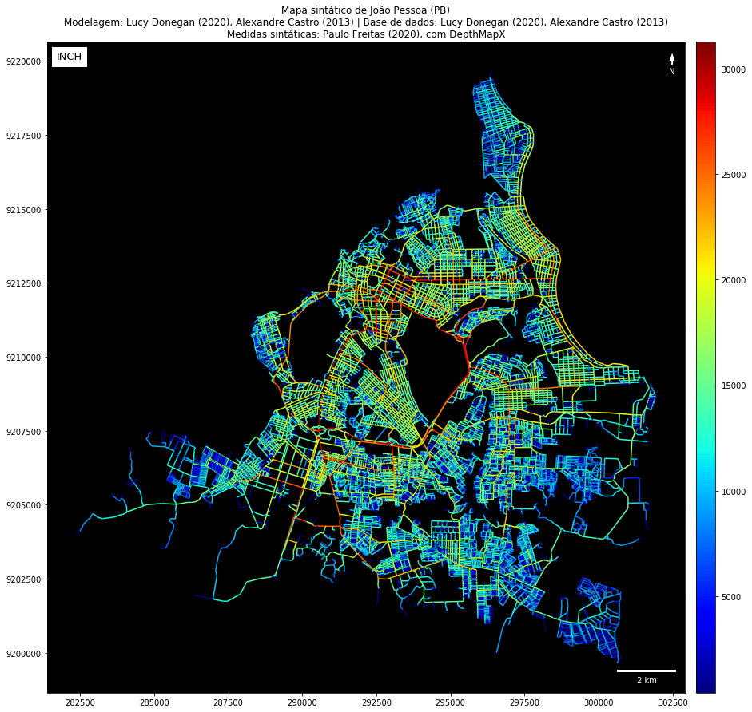
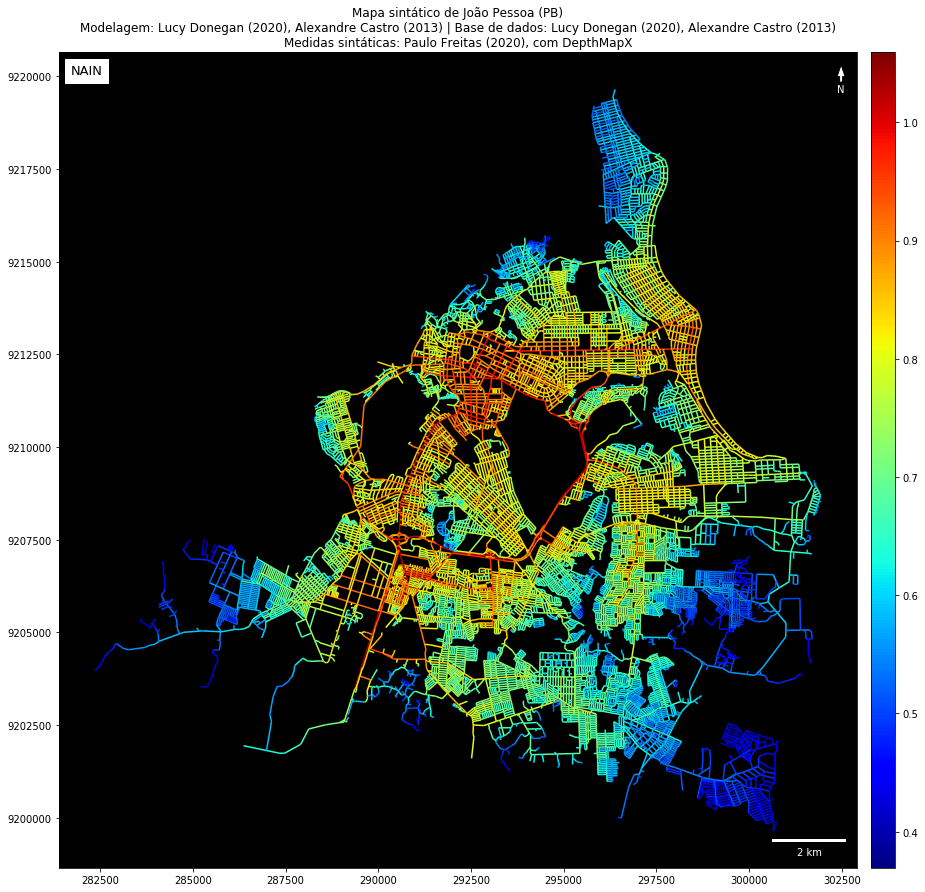
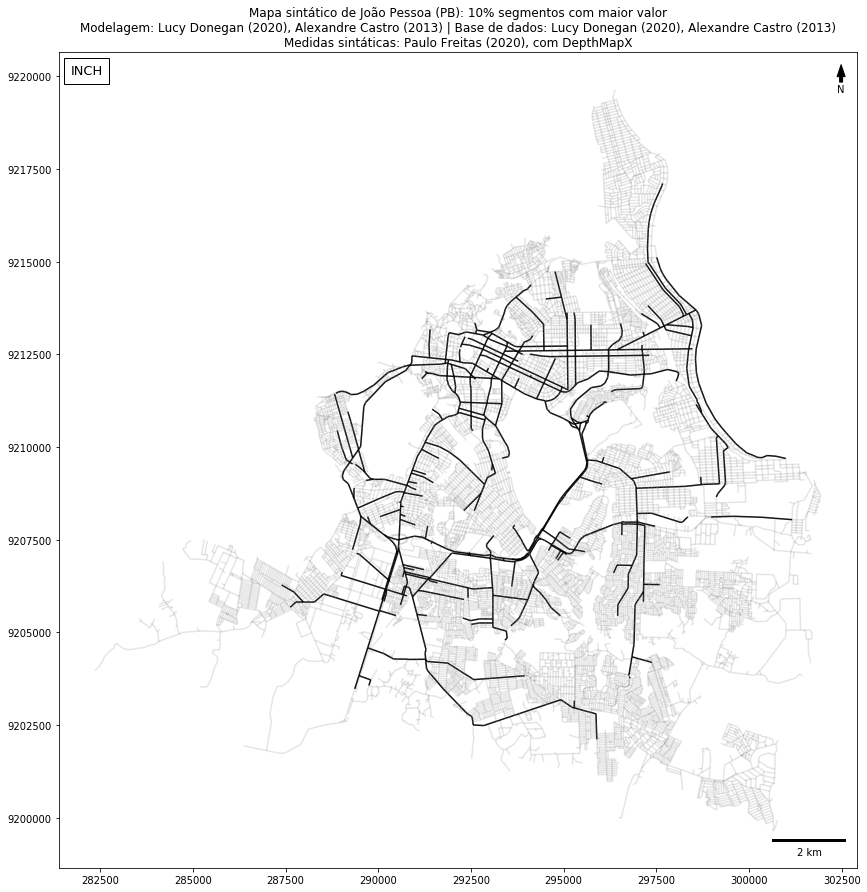
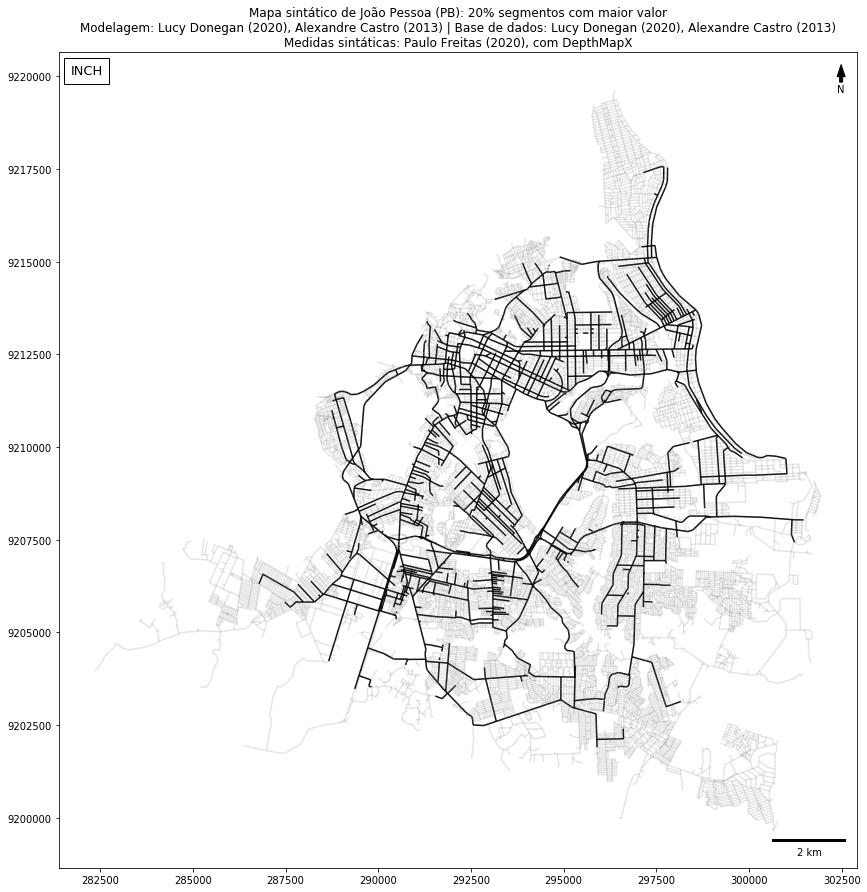

Aplicação
Aplicação#
Uso de recurso construído para facilitar a plotagem de mapas de sintaxe espacial, incluindo plotagens dos mapas para cada medida, configuração de fundo preto, destaque de segmentos com maiores valores por medida e criação de atlas.
%run ./space_syntax_with_geopandas_utils.ipynb
%run ./conn.ipynb
# Lê do PostGIS
gdf = gpd.read_postgis("SELECT * FROM jp_segment", con=connection)
# Lê do shapefile
# gdf = gpd.read_file("jp_segment.shp")
gdf.info()
<class 'geopandas.geodataframe.GeoDataFrame'>
RangeIndex: 28515 entries, 0 to 28514
Data columns (total 32 columns):
# Column Non-Null Count Dtype
--- ------ -------------- -----
0 id 28515 non-null int64
1 geom 28515 non-null geometry
2 depthmap_ref 28515 non-null int64
3 angular_connectivity 28515 non-null float64
4 axial_line_ref 28515 non-null float64
5 connectivity 28515 non-null float64
6 inch 28515 non-null float64
7 metric_choice_r1200_metric 28515 non-null float64
8 metric_choice_r500_metric 28515 non-null float64
9 metric_choice_slw_r1200_metric 28515 non-null float64
10 metric_choice_slw_r500_metric 28515 non-null float64
11 metric_mean_depth_r1200_metric 28515 non-null float64
12 metric_mean_depth_r500_metric 28502 non-null float64
13 metric_mean_depth_slw_r1200_met 28515 non-null float64
14 metric_mean_depth_slw_r500_metr 28502 non-null float64
15 metric_total_depth_r1200_metric 28515 non-null float64
16 metric_total_depth_r500_metric 28515 non-null float64
17 metric_total_length_r1200_metri 28515 non-null float64
18 metric_total_length_r500_metric 28515 non-null float64
19 metric_total_nodes_r1200_metric 28515 non-null float64
20 metric_total_nodes_r500_metric 28515 non-null float64
21 nach 28515 non-null float64
22 nach_r1200m 28515 non-null float64
23 nach_r500m 28515 non-null float64
24 nain 28515 non-null float64
25 nain_r1200m 28515 non-null float64
26 nain_r500m 28515 non-null float64
27 segment_length 28515 non-null float64
28 t1024_choice 28515 non-null float64
29 t1024_integration 28515 non-null float64
30 t1024_node_count 28515 non-null float64
31 t1024_total_depth 28515 non-null float64
dtypes: float64(29), geometry(1), int64(2)
memory usage: 7.0 MB
# cria o dicionário de mapa sintático
smap = make_smap(
gdf,
place = "João Pessoa (PB)",
modeling = "Lucy Donegan (2020), Alexandre Castro (2013)",
source = "Lucy Donegan (2020), Alexandre Castro (2013)",
measures = "Paulo Freitas (2020), com DepthMapX",
crs = {'init': 'epsg:31985'}
)
# plota mapa de integração tradicional
plot_syntax_map(smap)

# plota mapa de integração com fundo preto
plot_syntax_map(smap, bg_black=True)

# plota mapa com medida diferente
plot_syntax_map(smap, column='nain', bg_black=True)

# plota mapa que destaca os 10% segmentos com maiores valores
plot_higher_values(smap)

# plota mapa que destaca os 20% segmentos com maiores valores
plot_higher_values(smap, quantile=.8, save_as_field=True)

# salva como csv
smap['data'].to_csv("jp.csv", sep=";", index=False)
# salva como shapefile
smap['data'].to_file("jp.shp")
make_atlas(smap)
Salvo mapa para angular_connectivity
Salvo mapa para connectivity
Salvo mapa para inch
Salvo mapa para metric_choice_r1200_metric
Salvo mapa para metric_choice_r500_metric
Salvo mapa para metric_choice_slw_r1200_metric
Salvo mapa para metric_choice_slw_r500_metric
Salvo mapa para metric_mean_depth_r1200_metric
Salvo mapa para metric_mean_depth_r500_metric
Salvo mapa para metric_mean_depth_slw_r1200_met
Salvo mapa para metric_mean_depth_slw_r500_metr
Salvo mapa para metric_total_depth_r1200_metric
Salvo mapa para metric_total_depth_r500_metric
Salvo mapa para metric_total_length_r1200_metri
Salvo mapa para metric_total_length_r500_metric
Salvo mapa para metric_total_nodes_r1200_metric
Salvo mapa para metric_total_nodes_r500_metric
Salvo mapa para nach
Salvo mapa para nach_r1200m
Salvo mapa para nach_r500m
Salvo mapa para nain
Salvo mapa para nain_r1200m
Salvo mapa para nain_r500m
Salvo mapa para segment_length
Salvo mapa para t1024_choice
Salvo mapa para t1024_integration
Salvo mapa para t1024_node_count
Salvo mapa para t1024_total_depth
Salvo mapa para inch_higher